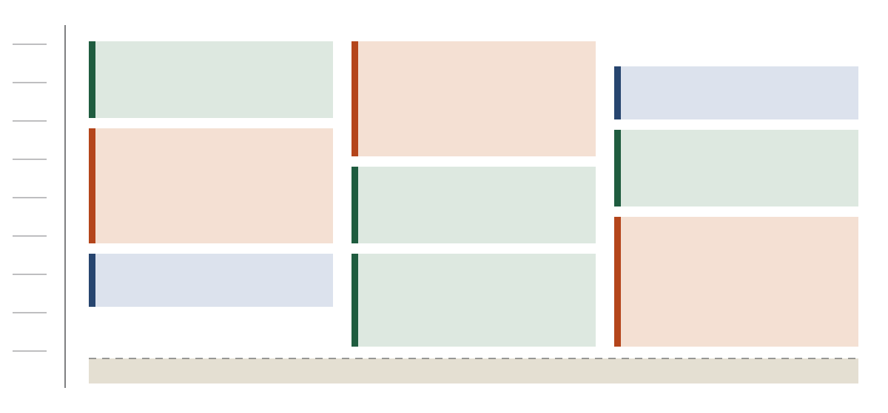
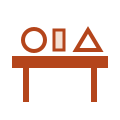

Friday
12 March 2027
The opening day, and the longest one. Fourteen sessions across four rooms, with two workshops that run for two hours each.
See Friday in the grid
Plenum is an invented congress about public infrastructure and the people who keep it running. Three days, four rooms, three tracks and a courtyard to stand in between them.
Read the whole programme The venue, the plan and how to get thereThe shape repeats: talks in the Great Hall through the morning, workshops running long in the side rooms, and an open assembly to finish.
12 March 2027
The opening day, and the longest one. Fourteen sessions across four rooms, with two workshops that run for two hours each.
See Friday in the grid13 March 2027
The busiest day. Two workshops fill the morning, the Great Hall runs back to back, and the assembly takes the long list.
See Saturday in the grid14 March 2027
A short day in three rooms. The Pump House is shut while the equipment goes back, and the hall is packed down after lunch.
See Sunday in the gridNothing is recorded, nothing is streamed and no session is repeated. If two things clash, that is the point of a grid you can read.
Switch between the days and filter by trackThe colour on the left edge of a session tells you what kind of room you are walking into. It is the same key on the grid, on the talk pages and here.
Talks in front of everybody, forty five minutes, questions at the end. Mostly in the Great Hall.

Hands on sessions that run long. Places are limited, and you sign up at the desk on the morning.
Open sessions with nothing prepared. Anybody in the room may speak, and somebody writes down what was said.
One entrance, one floor, six spaces around a courtyard. The plan and the walk from the station are drawn on the venue page.
The Old Waterworks is a decommissioned pumping station on the quay. It is one floor, so every room is reachable without a stair, and the only stair in the building goes up to a gallery that nothing is programmed in.
The courtyard in the middle stays open in all weather and is where lunch happens. The Quiet Room off the foyer is kept empty and unprogrammed for all three days.
Plan, access and the walk from the stationPlenum is an illustrative congress written for this template. The dates, the venue, the rooms, the sessions and every speaker named here are invented examples, not a real event and not real people. There are no ticket prices, no sponsors and no attendance figures anywhere in this edition. Replace all of it with your own before publishing.